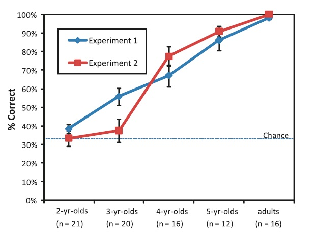

Mandarin-speaking children’s acquisition of sortal and mensural classifiers
by Peggy Li, ecky Huang, Yaling Hsiao
Classifiers in Mandarin Chinese
Sortal Classifiers precede objects;
Mensural Classifiers precede substance or a collection of objects.
Suface structure: NumP+ CL+NP
e.g. 1) san zhi gou-->three CL dog
2) san zhang zhi -->three CL(sheet) paper
Literature Reivew
1) Most of the studies focused only on the acquisition of sortal classifiers.
2) Children’s performance on sortal and mensural classifiers did not differ (Chien et al., 2003)
a) Children prefer individual objects when sortal classifiers are offered, but a container of substances when mensural classifiers are offered.->awareness of count-mass distinction.
b) Problems in Chien et al. (2003): prior exposures to certain CL+NP combinations.
Research Questions in This Study
1) Whether children can pick a novel object that matches the properties (shape, function, etc.) specified by the classifier?
2) At what age do children begin to understand mensural classifiers?
Experiment 1
Participants :69 chidren (2-5 years’ old) and 16 adults (control group) from Taipei, Taiwan.
Procedure: e.g. Mickey: I want a CL something. Question: What does Mickey want?
If the children know the noun properties a classifier denotes, they will have no trouble picking out the object Mickey wanted, no matter they are familiar with the object or not.
Results
1) Adults made mistakes on zhi, which in this experiment was a classifier for animals.
Since zhi could also be the classifier for long, thin, rigid object, participants paired zhi with cigar-like object. (zhi was excluded from the final analysis).
(My speculation: influence of Hokkien, aka Amoy Chinese or Taiwanese. In Hokkien, zhi is a default classifier, and gen is not a classifier).
2) Adults’ overall performance matched the authors’ expectation.
Results: Children
3) Effect of familiarity was not significant.->capable of picking out novel objects based on the semantic properties a given classifier denotes. (except 3 pairs)
4) Significant effect of age.
5) Significant effect of Classifiers. (e.g. 58% for main, 78% for gen)
a) Familiarity of certain classifiers.
6) Older children scored above chance on most classifier pairs.
Experiment 2
Expectation: mensural classifiers are acquired earlier than sortal classifiers.
Rationale: mensural classifiers are nouns that are frequent in Children’s input (e.g. wan ‘bowl’, bei ‘cup’).
Paradigm
Stimuli:
containers: he ‘box’, bei ‘cup’
configuration: dui ‘pile’ , pai ‘row’
sortal classifier: ge (indicates individuality).
Participants: same as experiment 1.
Procedure:
1) e.g. Mickey Mouse: I want one ‘bei’ (cup) something. Question: what does Mickey want?
2) Number word knowledge assessment: how well can the children count?
Results:
adults were in 100% agreement with the authors’ expectation.
Significant effect of age:
Children under 4 know little about mensural classifiers (even with the removal of children with a bias for default classifiers).
Significant effect of classifier
General sortal classifier>container classifiers>configuration classifiers.
Classifier type*age effect: improvement was not uniform across the ages.
Unit information or Shape-based information?

Number Word Knowledge and Classifier Knowledge
Based on the data of 2-yr-olds, and 3-yr-olds:
1) No correlation between the knowledge of Number word and sortal classifiers
2) Positive correlation between the Knowledge of Number Words and Mensural Classifiers
Interpretation: Knowledge of units of quantification requires the knowledge of number, which is less intuitive than the knowledge of shape.
Conclusions
2- and 3-yr olds do not yet understand the function of classifiers;
Not until 4 years of age do children begin to understand how classifiers specify units for quantification;
Knowledge of number words positively correlates to the knowledge of mensural classifiers;
The above phenomena might be associated with children’s conceptual development.
What I want to know
Sortal classifiers denote shape, size, flexibility, kind etc.
This paper discussed “shape”, what about other “sorts”?
The syntax of sortal classifiers and mensural classifiers are different.
Maybe it just takes longer for children to learn the syntax of mensural classifiers.
Do people utilize phonological cues, especially in the absence of orthography?
some other issues
Stimuli: “ba” and “kuai” are not pure sortal classifiers.
Self-contradicting points: Are classifiers morphemes or heads of classifier phrases?
Wrong interpretation of words: “dui” is both a noun and a verb (similar to English word “pile”), and “dui” is a noun when serves as a mensural classifier.